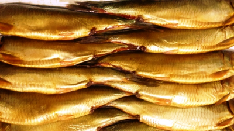

Продукция РК им.Котовского
(Цены на продукцию действуют с 01 января 2018 года)
Сельдь тихоокеанская

Сельдь тихоокеанская жирная холодного копчения
Цена: 180 руб./кг.
Сельдь тихоокеанская жирная слабосолёная
Цена: 145 руб./кг.
Сельдь тихоокеанская (Олюторская) холодного копчения
Цена: 230 руб./кг.
Сельдь тихоокеанская (Олюторская) слабосолёная
Цена: 210 руб./кг.
Сельдь тихоокеанская (кусочки) в горчичной заливке
Цена: 230 руб./кг.
Сельдь тихоокеанская (филе) в горчичном соусе
Цена: 250 руб./кг.
Сельдь тихоокеанская холодного копчения (филе кусочки) в масле
Цена: 250 руб./кг.
Сельдь тихоокеанская (филе кусочки) в масле
Цена: 230 руб./кг.
Сельдь тихоокеанская пряного посола
Цена: 195 руб./кг.
Сельдь тихоокеанская: описание, свойства
Сельдь тихоокеанская (дальневосточная) - одна из географических рас вида океанической сельди и относится к семейству сельдевых. Тихоокеанская сельдь рапространена по азиатскому побережью от Корейского полуострова до устья реки Лены. Вдоль американского побережья от моря Бофорта, Берингова пролива до залива Сан-Диего (п-ов Калифорния). По сравнению с другими формами (расами) океанической сельди, обладает наиболее ранней половозрелостью и наиболее быстрым ростом.
Виды тихоокеанской сельди
На основании изучения генетически обусловленных признаков учеными ТИНРО были выделены в Охотском море следующие популяции сельди: охотская (северо-западная часть Охотского моря); гижигинс- камчатская (Гижигинская губа, северо-восточная часть Охотского моря); тауйская (Тауйская губа); восточно-сахалинская; залива Терпения; озера Тунайча; сахалино-хоккайдская.
Питание сельди
Рацион питания сельди, в основном, составляют различные ракообразные.
Пищевая ценность и состав мяса сельди
Взрослая сельдь нагуливает до 18,7—25,7% жира, мелкая — до 23—32% жира. Особой жирности — 20—33% жира — достигает крупная летне-осенняя. Сельдь является великолепным источником витаминов A, D, и В12. Она также богата жирными кислотами Омега-3, содержание которых может значительно варьироваться.
Калорийность
В 100 г. массы содержится 71,5г. воды, 16,4г. белков, 13,9г. жиров, 1,7мг. Омега-3. Калорийность составляет 191Ккал.
Полезные свойства сельди
Сельдь легко усваивается организмом человека, а также является источником белка, йода, фосфора, кальция, калия, натрия, магния, цинка, фтора. В 100 граммах сельди содержится суточная норма белка.
Как правильно выбрать сельдь
Чтобы не купить испорченную сельдь, необходимо обратить пристальное внимание на глаза рыбы (если у селёдки глаза увлажнены, яркие и наполненные — рыба свежая, на жабры (у свежей сельди жабры чистые, красного или розового цвета, без слизи и неприятного запаха), на аромат (свежая тушка не должна содержать ярко-выраженного рыбного или прогорклого запаха), на внешний вид (кожа должна выглядеть увлажненной, упругой и блестящей, без посторонних пятен и дырок), на упругость (у качественной селёдки мясо плотное, брюшко плоское, у несвежей – вздутое).
Вернуться в каталог продукции